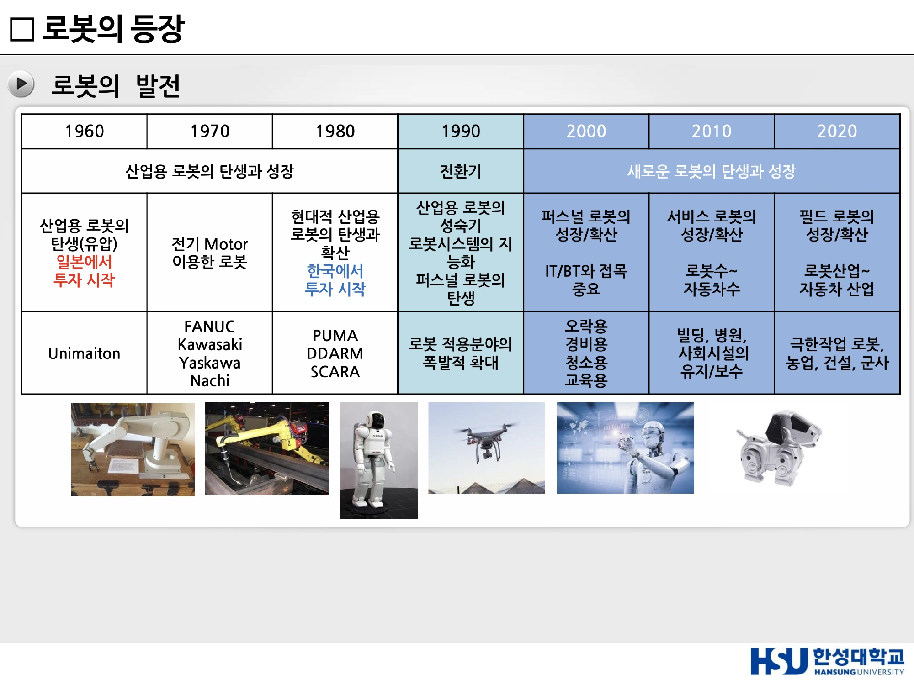
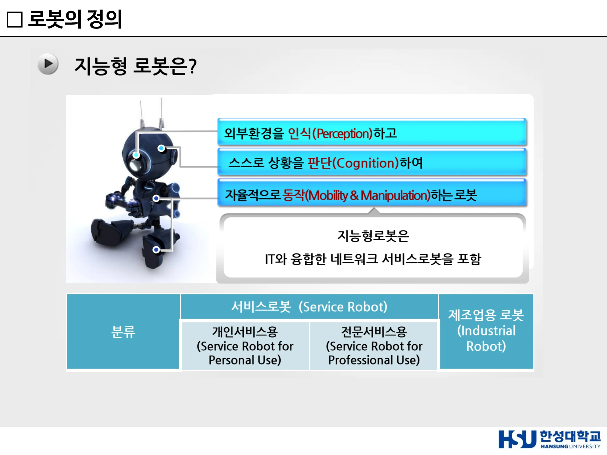
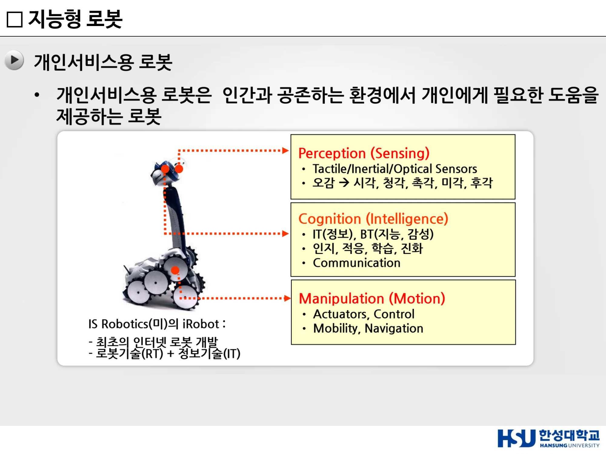
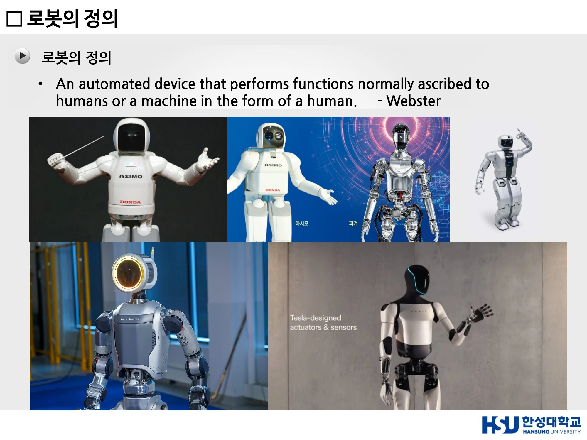

13주차 · 로봇의 등장과 산업용 로봇¶
🔗 강의 흐름 — 12주차에서 "왜 지금 로봇인가"를 봤다. 이번 주는 로봇이 무엇이고 어떻게 여기까지 왔는가를 연표로 훑고, 실제 산업 현장에서 쓰이는 로봇의 종류를 구분한다.
학습목표 — 로봇의 어원과 3원칙을 설명하고, 로봇공학의 시대별 패러다임 변화를 서술하며, 로봇의 협의·광의 정의와 지능형 로봇의 개념을 구분하고, 산업용 로봇 6종의 특징을 비교할 수 있다.
💡 기초 다지기 — 로봇(Robot)의 어원은 '강제 노동'이다. 체코어 Robota에서 왔고, 1920년 카렐 차페크의 희곡에서 처음 등장했다. 처음부터 로봇은 "인간을 대신해 힘든 일을 하는 존재"로 상상되었고, 그 희곡의 결말은 로봇이 인간을 몰살하는 비극이었다. 로봇 윤리 논의가 100년째 이어지는 이유다.
🗺️ 한눈에 보는 개념도¶
flowchart LR
A["1920<br/>R.U.R.<br/>Robota"] --> B["1942<br/>아시모프<br/>로봇 3원칙"]
B --> C["1952<br/>섀넌 테세우스<br/>최초 학습 로봇"]
C --> D["1961~62<br/>Unimate<br/>최초 산업용"]
D --> E["1966~72<br/>Shakey<br/>최초 지능형 이동로봇"]
E --> F["1980s<br/>행동기반 로봇<br/>Brooks"]
F --> G["1997~2002<br/>Sojourner·PackBot·Roomba"]
G --> H["2000s~<br/>휴머노이드<br/>ASIMO·Atlas"]
H --> I["현재<br/>Physical AI<br/>VLA"]1. 로봇의 어원¶
원래 로봇이란?
- 체코의 유명한 극작가 카렐 차펙(Karel Čapek)이 1920년에 쓴 희곡 「R.U.R. (Rossum's Universal Robots)」에서 소개
- 로봇의 어원은 Robota로 체코어로 강제적 노동, 노역, 일하는 사람을 뜻한다
- 이 희곡은 로봇들이 자신들의 창조주인 인간을 전부 살해하게 되는 비극을 인상적으로 묘사한 것으로, 다가올 기계문명 사회 속에서 인간 대 기계와의 관계를 예견하였다는 점에서 높이 평가되고 있다
- 로봇이라는 말이 탄생하기 이전부터 「자동인형(Automata)」, 「살아 움직이는 인형(Animated Doll)」 등의 말로 로봇의 개념은 이미 널리 알려져 있었다. 여기에는 19세기 막바지에 발명돼 20세기 초부터 광범위한 대중적 영향력을 행사한 영화의 힘이 크게 작용하였다
2. 아시모프의 로봇 3원칙¶
1942년 Isaac Asimov의 단편소설 「Runaround」에서 제시. 로봇이 인간과 공존하기 위한 윤리적·안전적 기준을 제안했으며, 현대 로봇공학과 AI 윤리 논의의 출발점으로 평가된다.
| 원칙 | 내용 |
|---|---|
| 제1법칙 — 인간 보호 | 로봇은 인간에게 해를 가해서는 안 된다 |
| 제2법칙 — 명령 복종 | 인간의 명령에 따라야 한다. 단, 제1법칙에 위배되는 경우는 제외 |
| 제3법칙 — 자기 보호 | 자신의 존재를 보호해야 한다. 단, 제1·제2법칙에 위배되어서는 안 된다 |
현대적 의미 — AI 윤리(Ethics) / 안전성(Safety) / 자율성(Autonomy) / 인간-로봇 협업(HRI) / 신뢰성(Trustworthy AI)
3. 로봇공학 연표 — 시대별 패러다임 변화¶
| 시기 | 패러다임 |
|---|---|
| 1960년대 | 최초의 산업용 로봇 Unimate 등장, 공장 자동화 시작. 유압 방식. 일본에서 투자 시작 |
| 1970~1980년대 | 산업용 로봇 보급 확대, 자동차·제조업 생산성 혁신. 전기 Motor 이용. FANUC, Kawasaki, Yaskawa, Nachi |
| 1980~1990년대 | 현대적 산업용 로봇의 탄생과 확산. PUMA, DDARM, SCARA. 한국에서 투자 시작. 공장 밖 환경에서 동작하는 이동로봇(Mobile Robot) 연구 활성화 |
| 1990년대 (전환기) | 산업용 로봇의 성숙기, 로봇시스템의 지능화, 퍼스널 로봇의 탄생. 로봇 적용분야의 폭발적 확대. 의료·서비스 로봇 등장 |
| 2000년대 | 퍼스널 로봇의 성장/확산. IT/BT와 접목 중요. 오락용·경비용·청소용·교육용. 인간과 함께 작업하는 협동로봇(Cobot) 및 소프트로봇 개발 |
| 2010년대 | 서비스 로봇의 성장/확산. 로봇 수 ~ 자동차 수. 빌딩·병원·사회시설의 유지/보수 |
| 2020년대 | 필드 로봇의 성장/확산. 로봇산업 ~ 자동차 산업. 극한작업 로봇, 농업·건설·군사 |
| 현재 | AI 기반 휴머노이드 로봇, 생체모사 로봇, Physical AI 로봇 시대로 진입 |
로봇 기술의 진화 방향: 자동화 → 이동성 → 서비스 → 협업 → 지능화
주요 이정표 상세¶
| 연도 | 사건 |
|---|---|
| 1952 | 클로드 섀넌(Claude Shannon) — 세계 최초의 학습 로봇 '테세우스(Theseus)' 개발. 미로를 탐색하며 경험을 기억하고 최적 경로를 학습하는 개념 제시. 현대 머신러닝과 자율주행 로봇의 시초로 평가. (다만 당시에는 로봇 구동 기술이 없어 쥐 모형은 외형에 그쳤고, 실제 이동은 기계 하판의 자석식 회로가 담당했다) |
| 1977 | IEEE가 클로드 섀넌의 테세우스에서 아이디어를 얻어 로봇 쥐가 미로를 탈출하는 대회(Micromouse) 발표 |
| 1979 | 세계 최초의 마이크로마우스 대회 개최 — 로봇이 스스로 환경을 인식하고 최적 경로를 탐색하는 자율주행 기술의 출발점 |
| 1961~62 | Unimate — 세계 최초의 산업용 로봇, 자동차 생산라인에 적용. 반복적이고 위험한 작업을 자동화하며 제조업 혁신 |
| 1966~72 | Shakey the Robot (미국 SRI, Stanford Research Institute) — 세계 최초로 인지(Perception)·추론(Reasoning)·행동(Action) 기능을 통합한 모바일 로봇. TV 카메라·거리 센서·범퍼 센서로 환경 인식, 스스로 목표를 설정하고 경로를 계획하는 초기 AI 로봇. 산업용 → 지능형 로봇으로 패러다임 전환, 자율주행 및 경로계획(Path Planning) 기술의 시초 |
| 1980년대 | 로봇이 공장을 벗어나 비정형(Unstructured) 환경에서 활동 시작. Rodney Brooks(MIT)의 행동기반 로봇(Behavior-Based Robotics) — 복잡한 중앙 제어 없이 센서와 행동의 직접 연결로 자율 행동 구현. 생체모사(Bio-inspired) 로봇 Genghis. "생각 후 행동" → "행동하면서 적응" 패러다임 전환. iRobot·Roomba의 출발점 |
| 1994 | CyberKnife — 세계 최초의 로봇 기반 방사선 수술 시스템. 로봇 팔 + 선형가속기(LINAC). FDA 승인으로 의료 로봇 시대 개막. 실시간 영상 추적으로 환자 움직임에도 정확한 치료, 비침습적(Non-invasive) |
| 1997 | Sojourner — NASA Mars Pathfinder 임무, 최초의 화성 탐사 로버. 지구–화성 통신 지연으로 반자율(Semi-Autonomous) 방식. 이후 Spirit·Opportunity·Curiosity·Perseverance의 기반 |
| 1998~2001 | iRobot PackBot — DARPA와 협력 개발 시작(1998), 2001년 9·11 세계무역센터(WTC) 붕괴 현장 수색·구조 임무에 실제 투입. 이동 플랫폼 + 로봇 팔 결합 → "이동" 중심에서 "작업" 가능한 로봇으로 진화. 현대 UGV·국방 로봇·재난 구조 로봇의 기반 |
| 2000 | da Vinci 수술로봇 — 최소침습수술(MIS)을 위한 복강경 수술 로봇. SRI International 연구 기반, Intuitive Surgical 설립. FDA 승인. 의사의 손동작을 정밀 재현, 3D 고해상도 영상과 손 떨림 보정. "로봇이 인간을 대체하는 것이 아닌 의사를 보조하는" 패러다임 제시 |
| 2002 | Roomba (iRobot) — 세계 최초의 대중적 청소로봇. 산업·군사용에서 가정용 서비스 로봇으로 패러다임 전환 |
| 2011 | 후쿠시마 원전 사태 — 유일하게 현장에서 작업을 한 로봇 = PackBot (Endeavor Robotics, 전 iRobot) |
IEEE의 탄생
- AIEE (American Institute of Electrical Engineers) — 1884년 설립, 전력·발전기·송전·전기기기. 대표 인물 Thomas Edison, Nikola Tesla
- IRE (Institute of Radio Engineers) — 1912년 설립, 무선통신·전자공학(레이더·반도체·전자회로·컴퓨터)
- 1960년대 들어 전기공학 + 전자공학 + 컴퓨터공학의 경계가 사라지면서 → AIEE + IRE = IEEE (1963)

▲ 로봇의 발전 연표 — 1960s 산업용 로봇 탄생·성장 → 1990s 전환기 → 2000s 이후 새로운 로봇의 탄생과 성장 (출처: 13주차 슬라이드 p3)
4. 서비스 로봇 성공의 조건¶
로봇 성공의 핵심 공식
$$\textbf{고객가치} = \text{편의성} + \text{시간절약} + \text{안전성} \;>\; \text{비용} + \text{불편함} + \text{학습부담}$$
- 로봇의 성공은 기술 수준보다 고객 가치(Customer Value)에 의해 결정된다
- 사용자가 느끼는 편의성이 비용과 불편함보다 커야 시장이 형성된다
- 기술 혁신보다 실제 문제 해결이 중요하다
- 사용하기 쉽고 유지보수가 간편해야 대중화 가능
- 로봇은 인간의 시간을 절약하고 삶의 질을 향상시켜야 한다
- 서비스 로봇 시장은 경제성 + 편의성 + 신뢰성의 균형이 핵심
Roomba의 성공 요인 — 생활 속 문제 해결 / 저렴한 가격 / 쉬운 사용성 / 유지관리 편의성 / 명확한 고객 가치 제공 사례 — 로봇청소기(Roomba), 서빙로봇, 물류배송로봇, 잔디깎이 로봇
서비스·모바일 로봇 성공의 핵심 기술¶
$$\text{센싱(Sensing)} \to \text{인지(Perception)} \to \text{지능(Intelligence)} \to \text{판단(Decision)} \to \text{구동(Actuation)} \to \text{행동(Action)}$$
- 센싱 — 주변 환경과 사람을 인식하는 기술
- 지능 — 정보를 분석하고 판단하는 기술
- 구동 — 판단 결과를 실제 행동으로 수행하는 기술
최근 AI 발전으로 센싱과 지능 기술이 급속히 향상되었다. 최종적으로 로봇의 가치는 실제 행동(Action)으로 구현될 때 완성된다.
5. 로봇의 정의¶
Webster 사전 — "An automated device that performs functions normally ascribed to humans, or a machine in the form of a human."
강의 정의 — 컴퓨터에 의해 동작하는 장치
| 범위 | 분류 | 예 |
|---|---|---|
| 협의의 로봇 개념 | 산업용 로봇 | 로봇 팔: 직교, SCARA, 수직다관절 로봇 등 / 무인 반송차(AGV) |
| 비산업용 로봇 | Humanoid 로봇, Toy 로봇, 의료용 로봇 등 | |
| 광의의 로봇 개념 | 자동화 제조장비 | CNC장비, SMT, 반도체, LCD, PDP, 광부품, 바이오 제조장비 등 |
| 군사장비 | 무인비행기, 무인전투차량 | |
| 상품 | 프린터, 자동세탁기, HDD, DVD |
로봇 응용 분야의 확산¶
| 분야 | 1970 → 2010 확산 |
|---|---|
| 제조용 | 자동차용 → 전자조립, SMD → 반도체·LCD·PDP장비, 광부품 → 바이오·Nano |
| 비제조용 | 심해용, 농업용 → 발전소용, 경비용 → 우주용, 군사용 |
| 서비스용 | 병원용 → 가정용, 오락용, 청소용, 안내용 → Humanoid, 노인·장애인용 |
지능형 로봇¶
정의 — 반드시 외울 것
지능형 로봇 = 외부환경을 인식(Perception)하고, 스스로 상황을 판단(Cognition)하여, 자율적으로 동작(Mobility & Manipulation)하는 로봇 지능형 로봇은 IT와 융합한 네트워크 서비스로봇을 포함한다.
분류
| 서비스로봇 (Service Robot) | 제조업용 로봇 | |
|---|---|---|
| 개인서비스용 (Service Robot for Personal Use) | 전문서비스용 (Service Robot for Professional Use) | (Industrial Robot) |
전통적 로봇 vs 지능형 로봇
| 전통적 로봇 | 지능형 로봇 |
|---|---|
| 제조 현장의 반복 작업 자동화 | 사람과 함께 생활하고 협업 |
| 인간 노동 대체를 목표로 발전 | 환경을 인식하고 스스로 판단 |
| 정형화된 환경에서 동작 | 비정형 환경에서 자율적으로 동작 |
| 생산성 및 품질 향상에 집중 | 인간의 삶의 질 향상에 기여 |
| 산업용 로봇 중심 | 서비스·의료·휴머노이드 로봇 중심 |
과거의 로봇은 인간을 대체하기 위해 개발되었지만, 미래의 로봇은 인간과 공존하며 삶을 지원하는 방향으로 발전하고 있다. 변화의 원인 — 환경 변화(Environment Change), 기술 혁신(Technology Innovation), 사회적 요구(Social Needs) 증가, AI·디지털 기술 발전, 고령화·노동력 부족.

▲ 지능형 로봇 = 외부환경을 인식(Perception)하고 스스로 상황을 판단(Cognition)하여 자율적으로 동작(Mobility & Manipulation)하는 로봇 (출처: 12주차 슬라이드(덱 20) p36)
개인서비스용 로봇의 3축¶
개인서비스용 로봇 = 인간과 공존하는 환경에서 개인에게 필요한 도움을 제공하는 로봇
| 축 | 세부 |
|---|---|
| Perception (Sensing) | Tactile / Inertial / Optical Sensors — 오감(시각·청각·촉각·미각·후각) |
| Cognition (Intelligence) | IT(정보) + BT(지능, 감성) — 인지·적응·학습·진화, Communication |
| Manipulation (Motion) | Actuators, Control — Mobility, Navigation |
사례 — IS Robotics(미)의 iRobot(최초의 인터넷 로봇 개발, 로봇기술(RT) + 정보기술(IT)), Amazon Astro, LG CLOi, X Sense Robot(바둑), 로봇청소기.

▲ 개인서비스용 로봇의 3축 — Perception(Sensing) / Cognition(Intelligence) / Manipulation(Motion) (출처: 12주차 슬라이드(덱 20) p38)
로봇은 미래 핵심 성장 동력¶
| 관점 | 내용 |
|---|---|
| 21세기 대표 End-User 제품 | 산업용 로봇 → 생활형 서비스 로봇으로 진화. 인간과 공존하며 다양한 서비스 제공. AI 시대의 대표 소비자 제품으로 성장 |
| 메가트렌드의 핵심 해결책 | 고령화 사회 대응 / 노동력 부족 문제 해결 / 삶의 질 향상 / 개인화·지능화·모바일화 서비스 실현 |
| 대한민국의 기회 | 세계 최고 수준의 ICT 및 제조 인프라 보유 / 로봇 서비스 도입에 적합한 생활환경 / AI·반도체·통신 기술과의 시너지 가능 |

▲ 로봇의 정의(Webster) — "An automated device that performs functions normally ascribed to humans, or a machine in the form of a human." (출처: 12주차 슬라이드(덱 20) p33)
6. 산업용 로봇 — 작업 영역에 따른 분류 6종¶
| 종류 | 특징 |
|---|---|
| 직교 좌표형 로봇 | 간단한 기구학, 구성이 쉬움 |
| 원통형 로봇 | 장애물 회피가 용이, 기구 설계 간단 |
| 구형 로봇 | 구면 좌표계 기반 |
| SCARA 로봇 | Selective Compliance Assembly Robot Arm (선택적 유연 조립 로봇 팔). 고속 작동, 설치 단순, 정밀성 우수. 조립 작업에 많이 적용 |
| 수직다관절 로봇 | 운동 자유도 높음 → 용접, 이동, 조립 등 가장 넓게 사용됨 |
| 이동형(Mobile) 로봇 | 물류 시스템에 주로 사용. Service 로봇 응용 분야로 확대 |
암기 포인트
- SCARA = 조립 전용, 고속·정밀
- 수직다관절 = 가장 범용적(용접·이동·조립)
- 원통형 = 장애물 회피 유리
로봇의 구조에 따라 수행 가능한 작업 동작이 달라진다.
용도별 산업용 로봇¶
| 용도 | 내용 |
|---|---|
| 용접용 로봇 | 용접 작업은 노동집약적이고 열악한 환경 |
| 조립용 로봇 | 생산성, 조립 정밀도 향상 → 중요도 증대. Turret Head(최대 6개의 다양한 툴 장착), Auto Tool Changer(혼류 생산 중 툴 자동 교체), COVRA(Automatic Vibration Alignment Unit — 진동으로 소형 부품을 트레이에 정렬) |
| 조립용 로봇(정밀) | 초정밀 부품, 반도체 부품 조립 — Chips on Wafer, CSP Bonding, MicroBGA, Simultaneous Recognition, Bonding Force Control, Bonding Position Inspection, Lead Frame Inspection |
| 도장용 로봇 | 열악한 작업 환경, 균일한 품질 |
| 검사용 로봇 | 카메라, laser, 초음파 등 sensor 활용. X-ray sensor 활용(BGA·PCB X-ray Inspection, Solder Bridge / Excessive Solder / Insufficient Solder 판별, 3D Image) |
| 이송용 로봇 | 3D 작업, 노동법상 기계가 수행 |
| 이송용 로봇(반도체) | 반도체 물류 자동화 → 생산성 향상 핵심 (Samsung FARA RMO-1T, RMO-1L) |
핵심
"현재 로봇 시장에서 가장 큰 비중을 차지하고 있는 분야는 제조업용 로봇이다."
산업 제조용 로봇의 예 — 공장용(3D 부분): 용접, 조립, 물류이동, 검사용, 진공용, 클린룸용, 반도체, LCD, PDP 등
첨단 제조업용 로봇 — 일본 야스카와의 10대의 로봇이 동시에 작업하는 사례. 작업물의 형상이 비록 변하더라도 이에 별도의 Jig나 로봇의 재배치 없이 작업이 가능하다.
첨단 정밀 제조업용 로봇 — 제조장비: 연료전지, 광부품 제조용, 반도체 장비 (LD(PD) Align장비, 광부품조립장비)
2025 하노버산업박람회(Hannover Messe) 키워드 — #AI #산업자동화 #스마트제조 #디지털트윈 #지속가능성 #디지털전환 #수소 #협동로봇
지능형 로봇 산업
"제4차 산업혁명, 새로운 제조 환경에서 로봇은 가장 핵심적인 도구입니다."
7. 휴머노이드 로봇의 흐름 (14주차 예고)¶
| 시기 | 내용 |
|---|---|
| 2000년대 휴머노이드 | 인간을 위한 작업환경에서 활용 가능 — Honda ASIMO |
| 최근 휴머노이드 | Atlas (Boston Dynamics, 2016) — 험지 보행·파쿠르 / Tesla bot (Tesla, 2022) / 중국 휴머노이드 격투 시연 |
| 비정형 환경 로봇 연구 | 후쿠시마 원전 사태 — 유일하게 현장에서 작업한 로봇 = PackBot |
| 2000년대 생체모사 로봇 | 자연에 존재하는 다양한 과학적 원리를 로봇에 응용하는 패러다임 |
| 2010년대 소프트 로봇 | 유연 소재의 적응성으로 인간과 조화를 이루는 로봇으로 발전 — 유연한 소재를 사용하여 적응력이 좋고 안전한 로봇 |
| 현재의 로봇 | 자율주행과 드론 — 로봇 & 비정형(정해지지 않은) 환경 사이의 상호작용을 위해서는 패러다임의 진화가 필요함 |
8. 중국 휴머노이드 / 로봇 기업 VLA 모델 비교 (2025)¶
VLA = Vision-Language-Action Foundation Models. 카메라로 보고(Vision), 말로 지시받고(Language), 몸으로 실행하는(Action) 통합 모델. 자료: PARC Lab · 한성대학교 미래모빌리티학과 · 2025
6개 기업 비교¶
| 회사 | 대표 모델 | VLA | 기반 LLM | 모델 규모 | 언어 | 가격대 | 특이사항 / HW |
|---|---|---|---|---|---|---|---|
| X Square Robot | X1 / 15B(개발 중) | ◎ | π₀ 경량화 / QWEN LLM | 1.5B → 15B | 중/영 (한국어 ✕) | 60~80만 RMB | Foundation 전략 · GPU 10만장 임대 · 200명 3교대 Dataset 수집 |
| UBTECH | TianGong | ○ | QWEN LLM | 미공개 | 중/영 (한국어 ✕) | USD 56~90K | 교육용 휴머노이드 (Walker S2는 산업 E2E, USD 170K) |
| Unitree | G1 / B1 | ✕ | — | — | — | USD 50~53K | NVIDIA Jetson Orin · LIVOX 3D LiDAR · 범용 SDK 생태계 |
| Booster Robotics | T1 / K1 | ✕ | — | — | — | USD 15~45K | NVIDIA / Qualcomm C8550 — Qualcomm 버전 TOPS 성능 저조 |
| DEEP Robotics | X30 / M20 | ✕ | — | — | — | USD 45~85K | RK3588 · On-Device 추론 · 중국 4족 시장 점유율 85%+ |
| Robint | 인도공항 서비스 로봇 | ✕ | — | — | — | 80K RMB | LG 클로이 유사형 · 휴머노이드 출시 계획 없음 |
◎ VLA Foundation 개발 / ○ VLA 적용 / ✕ VLA 미적용(HW 플랫폼 중심) 공통 갭: VLA 보유 2개사 모두 QWEN 기반 → 한국어 미지원
X Square Robot — VLA Foundation 전략¶
중국판 Physical Intelligence(π₀) + OpenVLA 통합 노선.
| 축 | 내용 |
|---|---|
| MODEL SCALING | 1.5B → 15B. π₀ 3.3B 대비 50% 경량화한 X1(1.5B) 상용 출시, 15B Foundation 모델 개발 중(10배 스케일업) |
| GPU INFRASTRUCTURE | 10만 장 (~2억 RMB/년). GPU 대여 기반 학습 인프라, 중국 정부·클라우드 자원 활용 |
| DATA COLLECTION | 200명 × 3교대, 4,000m² 시설. 전문 인력의 모방학습 Dataset. 참관 불가(블랙박스 운영) |
제품 포트폴리오 — X1(교육용 VLA 휴머노이드, 1.5B, 60만 RMB) / X2(자체 학습용 본체, 80만 RMB, DJI 출신 HW 개발자, 2족 보행 미지원) / 15B(개발 중) / Hands(정밀 조작 액추에이터, 20 DoF · 15 액추에이터, 31개 정밀 동작, 촉각 센서 내장, 20만 RMB)
핵심 시사점 & 한국 진입 전략¶
| # | 시사점 |
|---|---|
| 01 | VLA 모델 보유는 2개사뿐 — 나머지 4개사는 HW/플랫폼 중심. VLA는 협력 파트너의 2차 개발 영역으로 남겨둠 → SW 차별화 여지 존재 |
| 02 | X Square의 공격적 Foundation 전략 — π₀ 3.3B → 1.5B 경량화 상용화, 15B QWEN 기반 Foundation + GPU 10만장 + 200명 Dataset 수집 = 사실상 π₀ + OpenVLA 통합 노선 |
| 03 | 한국어 미지원이 공통 갭 — UBTECH·X Square 모두 QWEN 기반. LoRA 한국어 어댑터 / Fine-tuning 개발이 차별화 포인트 |
| 04 | 실질적 해자는 데이터 인프라 — 북경 휴머노이드 훈련센터: 2개월간 15,231 episode 수집 → 약 31억원 데이터 자산화. 5개 도시 확장 → 모방학습 dataset의 표준화·산업화·거래화 |
STRATEGIC TAKEAWAY
모델 자체보다 '한국어 VLA Foundation + 국산 Dataset 인프라' 동시 구축이 한국의 비대칭 우위
CES 2026 — 휴머노이드가 핵심 주제¶
| 구분 | 내용 |
|---|---|
| 전체 흐름 | 휴머노이드 로봇이 CES 2026의 핵심 주제로 부상 — 산업용 중량물 작업부터 가사 도우미까지. 엔비디아 CEO 키노트에서 'Physical AI'를 핵심 테마로 제시(자율주행 + 휴머노이드). 가정용보다 산업용 시스템이 더 두각 — 생성형 AI 붐과 엔비디아 Jetson 확산이 맞물린 결과 |
| Boston Dynamics | 전기식 Atlas 양산형 첫 공개. 56 자유도, 7.5피트 도달 거리, 110파운드(약 50kg) 적재. Google DeepMind의 Gemini Robotics AI 통합 → 복잡한 지시 추론 가능. 초기 물량은 2026년 조지아주 현대차 메타플랜트에 배치 예정 |
| NVIDIA | 휴머노이드용 비전언어모델 'Gr00t'(센서 입력→신체 제어), 추론·계획용 'Cosmos' 모델 공개 |
| LG | CLOiD — 가정용 동반자 로봇 |
| 중국 기업 | 휴머노이드 전시의 상당 부분 차지. Unitree G1·H2·R1 전 라인업(G1은 고속 무술·복싱 동작 시연, Robot-as-a-Service 모델로 전환, 약 70억 달러 가치로 IPO 추진 중), ROBOTERA·AgiBot·Galbot·Engine AI·Noetix·X-Humanoid |
| 가정/서비스 | Switchbot Onero H1(Engadget 'CES 2026 베스트 로봇'), Fourier GR-3, ROBOTERA L7(마사지 시연), Sharpa(탁구·블랙잭 로봇 손), Realbotix(얼굴 추적·감정 인식) |
🤔 생각해 봅시다¶
- 기말 5번 연습 — "로봇 기술이 인류 문제 해결에 기여하는 사례로 보기 어려운 것"의 정답은 개인 맞춤형 엔터테인먼트 로봇이다. 그 이유는 무엇인가? 엔터테인먼트 로봇에 가치가 없는 것인가, 아니면 "인류 문제 해결"이라는 기준에 부합하지 않는 것인가?
- 아시모프의 3원칙은 오늘날 자율주행차의 윤리 문제(트롤리 딜레마)에 그대로 적용 가능한가? 부족한 점은 무엇인가?
- 중국 휴머노이드 기업 6곳 중 4곳이 VLA 없이 HW만 다루는 이유는 무엇인가? 한국 기업은 어느 층위를 겨냥해야 하는가?
✅ 이번 주 체크리스트¶
- Robota의 어원과 R.U.R.(1920, 카렐 차페크)을 안다
- 로봇 3원칙을 순서대로 말할 수 있다
- Unimate·Shakey·Roomba·PackBot의 의의를 각각 한 줄로 말할 수 있다
- 로봇의 협의/광의 정의를 구분할 수 있다
- 지능형 로봇의 정의(인식-판단-동작)를 외웠다
- 산업용 로봇 6종과 SCARA·수직다관절의 용도를 안다
- VLA가 무엇의 약자인지 안다
▶️ 다음 주 예고 — 마지막 주제. 휴머노이드는 어떻게 걷는가. 유압과 전기 모터의 대결, 다리에 왜 6개의 관절이 필요한가, 그리고 NVIDIA가 만드는 모션 생성 AI. → 14주차